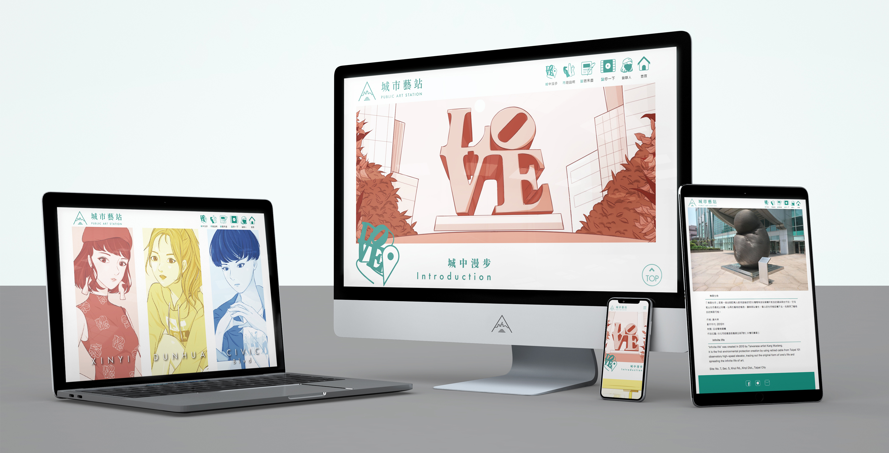

負責項目
整體內容企劃、功能設計、網頁切版。
需求規格
行動式網頁，支援RWD。
設計重點
- 理念:
當你漫步於城市之中，你是否錯過了什麼?
公共藝術是城市之中一道亮麗的風景線，更擁有推管美感、集體記憶功能。但是儘管如此，我們卻似乎總是忽略他，也因此，讓本團隊興起了想推廣他的念頭。
而要做為推廣，我們選擇了尚未接觸公共藝術的年輕族群作為對象，因為從今年金車文教基金會的調查中我們可以發現，有八成二的青少年以手機來接觸美感，正是符合我們的受眾。
而我們最終的目的是要透過系列產出，達到推廣台北文化以及提升民眾美感素養的結果。也因此我們選擇了行動式網頁來做為最主要的推廣媒介。
- 視覺:
在經過討論之後，我們認為公共藝術更符合簡單、明快的現代城市風格，因此在製作上選用比較簡約現代的線條，配色也使用比較有活潑、現代感的綠橘配色，並在製作時決定要擁有較多的留白，可以讓使用者有更多呼吸的空間，是比較符合我們的想像的。
- 功能:
在製作上我們因為強調手機板，所以整體製作是由手機板開始，再延伸至電腦版，整體上選用許多下滑動畫，並且討論對手機版使用者更方便的閱讀方式，才進行了整體的動線布局，也多次請沒有使用過本網站的使用者體驗，並改進不方便之處。
而功能上我們除了有比較多的下滑互動外，也因為想要吸引更多青少年，所以決定在頁面上製作一個簡單的問答小遊戲，裡頭所有題目都是由我們自己去蒐集資料製作而成的。
使用工具
photoshop、Illustrator、Dreamweaver(HTML、CSS3、JavaScript、JQuery)
展示網址
https://celiachou.github.io/PUBLIC_ART/index.html
設計示意圖
